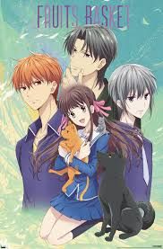
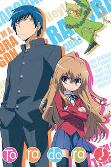

Romance Anime
Slow burns, messy feelings, and characters who actually grow. Whether it’s sweet, dramatic, or chaotic, romance hits hardest when it’s real.
Jump to the lineupRomance Anime Lineup
| Anime | Genres | Where to Watch | About the Story | Trailer |
|---|---|---|---|---|
|
 Fruits Basket (2019) |
Romance, Fantasy |
Crunchyroll Hulu |
Tohru Honda is a kind and optimistic high school girl who discovers the
Sohma family carries a mysterious zodiac curse. As she grows closer to
Kyo and Yuki Sohma, she uncovers emotional trauma, family pressure, and
hidden love. Through empathy and warmth, Tohru helps everyone begin to heal.
Main characters: Tohru Honda, Kyo Sohma, Yuki Sohma If you like: The Summer I Turned Pretty or To All the Boys I've Loved Before, you’ll love this emotional slow-burn romance. |
|
|
 Toradora! |
Romance, Slice of Life |
Netflix Crunchyroll |
Ryuuji looks intimidating but is incredibly kind, while Taiga is tiny but fierce.
When they team up to help each other confess to their crushes, their unlikely
friendship slowly grows into something deeper. The show beautifully captures
teenage vulnerability and emotional growth.
Main characters: Taiga Aisaka, Ryuuji Takasu, Minori Kushieda If you like: Never Have I Ever or 10 Things I Hate About You, you’ll enjoy this chaotic but heartfelt romance. |
|
 Romantic Killer
Romantic Killer
|
Romance, Comedy | Netflix |
Anzu Hoshino prefers video games and snacks over romance, but a magical being
suddenly forces her into classic rom-com scenarios. As she resists destiny,
she builds unexpected friendships and slowly discovers what real connection means.
Main characters: Anzu Hoshino, Tsukasa Kazuki, Junta Hayami If you like: Scott Pilgrim or She's the Man, you’ll love this comedy-heavy anti-romance. |